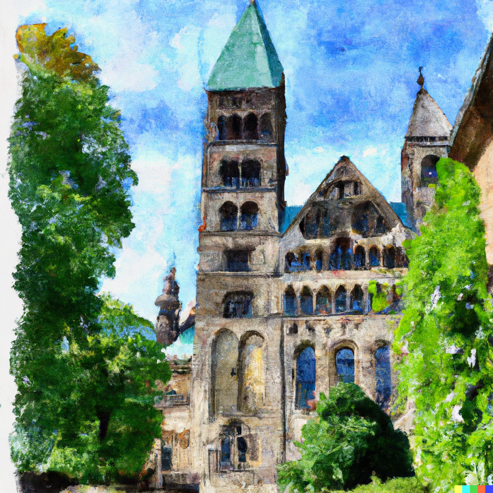

Welcome to the 15th Swedish Economic History Meeting
At the Lund Department of Economic History
The dates will go here
The dates of the meeting are…

Watercolour generated by
Dall-e 2
News
The News will go here
News will go here…
Accomodation and travel
The accomodation and travel info is here
Accommodation information will be summarized here.
A link to travel information goes here.
A link to accomodation information goes here.